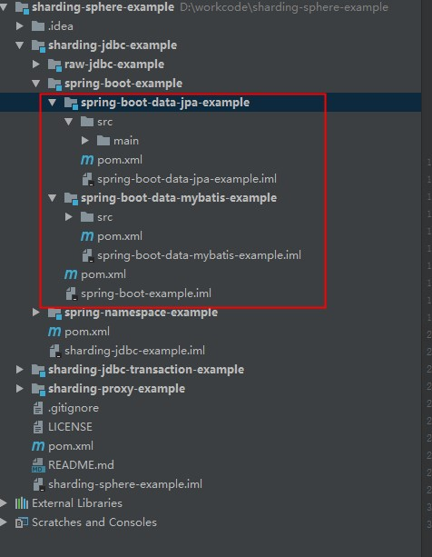

Introduction
为什么要分表
分库分表方案
分库分表产生的问题
分库分表的方案产品
当当网sharding-jdbc
Published with GitBook
当当网sharding-jdbc
当当网sharding-jdbc
官方demo

官方文档
支持哪些
适用于任何基于Java的ORM框架，如：JPA, Hibernate, Mybatis, Spring JDBC Template或直接使用JDBC。
基于任何第三方的数据库连接池，如：DBCP, C3P0, BoneCP, Druid, HikariCP等。
支持任意实现JDBC规范的数据库。目前支持MySQL，Oracle，SQLServer和PostgreSQL。
results matching "
"
No results matching "
"